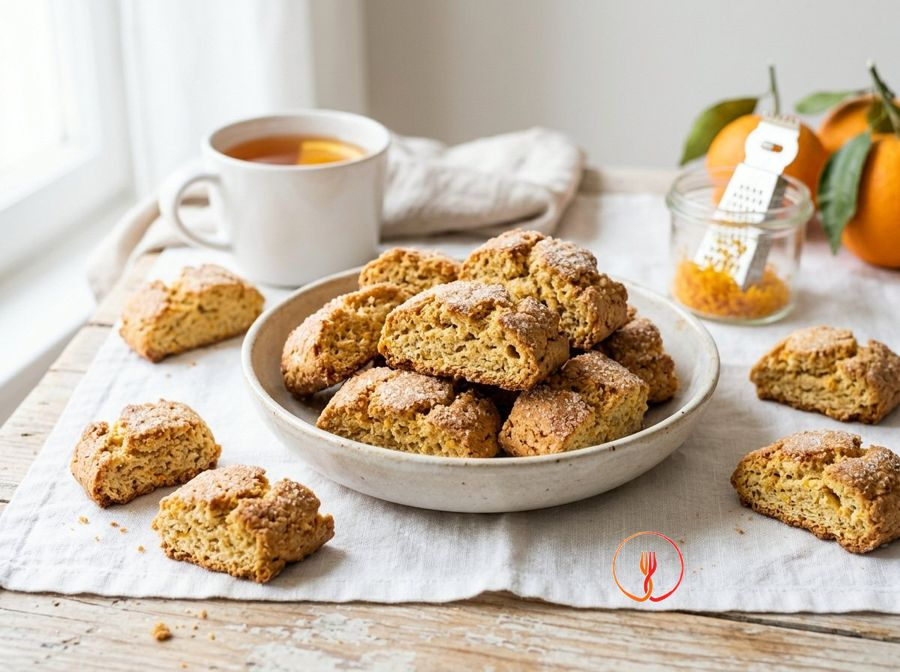

Rustic Olive Oil and Orange Biscuits
Dunking biscuits without butter, crunchy and fragrant, typical of the Italian rural tradition. Olive oil makes them crisp for a long time without making them heavy.
Ingredients
- Type 1 flour (a semi-wholegrain Italian flour richer in fiber and germ)350 g
- Granulated sugar100 g
- Mild extra virgin olive oil80 ml
- Eggs2 pcs
- Grated orange zest1 pcs
- Baking powder10 g
- Milk for brushing20 ml
Allergens
Eggs, Gluten, Milk
Method
- In a large bowl, crack the 2 eggs and add the 100g of granulated sugar. Use a hand whisk or a fork to beat the mixture vigorously for about 2-3 minutes until you achieve a slightly frothy consistency and a pale yellow colour. This step is essential to ensure the sugar crystals begin to dissolve properly. Chef's tip: use room temperature eggs to help create a perfect and more stable emulsion with the fats.
- Pour the 80ml of mild extra virgin olive oil in a thin stream into the egg mixture, while whisking constantly. Dedicate about 1 minute to this process to create a homogeneous emulsion between the oil's fat and the eggs' water content. The final result should be a fluid, glossy liquid with no visible separation. Chef's tip: choose a delicate EVO oil, such as one from Liguria, which has sweet notes that won't overpower the orange aroma.
- Finely grate the zest of 1 organic orange directly over the liquid mixture, taking care to only take the pigmented surface part. Stir briefly with a spatula to distribute the essential oils, which will release an intense and natural citrus aroma throughout the dough. You will immediately smell a fresh fragrance as soon as the zest touches the liquid base. Chef's tip: strictly avoid the white pith (albedo) as it would make the biscuits bitter.
- Sift the 350g of type 1 flour together with the 10g of baking powder to eliminate any lumps and ensure an even rise. Begin adding the powders to the liquid mixture, one third at a time, incorporating them initially with a fork. Work the mixture for about 2 minutes until the flour has been almost completely absorbed by the liquid base. Chef's tip: sifting the flour is not optional; it oxygenates the dough, making the final biscuit more crumbly.
- Transfer the mixture onto a lightly floured work surface and knead it by hand for about 2-3 minutes until you have a compact and smooth dough. The dough should feel elastic, soft to the touch, and not at all sticky to your fingers. Do not overwork it to avoid overheating the oil or overdeveloping the gluten, which would make the biscuits tough. Chef's tip: if the dough is too soft due to large eggs, add a dusting of flour, but very sparingly.
- Take small portions of the dough and shape them into cylinders about 8cm long, then flatten them slightly with the palm of your hand to give them the typical dunking biscuit shape. Try to keep a consistent size for all pieces to ensure they bake evenly in the same amount of time. You will get about 16-20 biscuits depending on the size chosen. Chef's tip: work the cylinders quickly to keep the dough structure firm and easy to handle.
- Line a baking tray with parchment paper and arrange the biscuits well apart, leaving at least 3cm between each one as they will expand during baking. Gently brush the surface of each biscuit with the 20ml of milk using a silicone pastry brush. If you want an extra touch of crunch, now is the time to sprinkle a pinch of granulated sugar over the milk. Chef's tip: brushing with milk helps to give a golden and appetizing colour to the surface.
- Place the tray in a preheated conventional oven at 180°C and bake for about 15-18 minutes until the desired golden brown colour is reached. The biscuits should appear slightly coloured on top and feel dry and firm to the touch. Once out of the oven, let them cool completely on a wire rack to allow internal moisture to evaporate entirely. Chef's tip: do not leave them in the oven beyond the indicated time, as they naturally harden during the cooling phase.
Nutrition facts (estimate)
| Per serving (145 g) | Per 100 g | |
|---|---|---|
| Energy | 2485 kJ / 594 kcal | 1714 kJ / 410 kcal |
| Protein | 12.9 g | 8.9 g |
| Carbohydrates | 88.0 g | 60.7 g |
| of which sugars | 25.0 g | 17.2 g |
| Fat | 20.8 g | 14.3 g |
| of which saturates | 3.3 g | 2.3 g |
| Fibre | 3.5 g | 2.4 g |
| Salt | 0.15 g | 0.1 g |
AI estimates based on average CREA / USDA data: indicative only, not a substitute for medical or dietitian advice.
Open the recipe in the app for the shopping list, ingredient sheets and nearby shops.